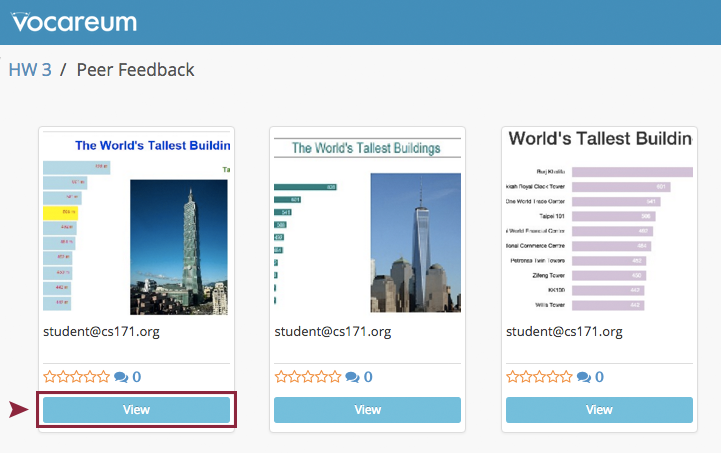
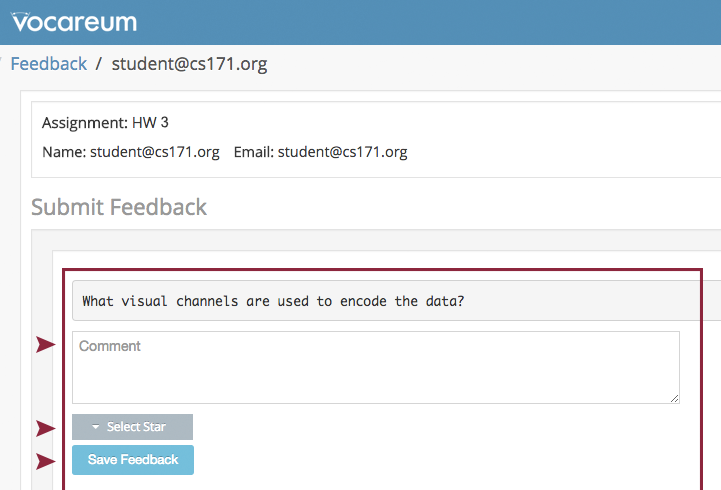

This homework is due on Monday, October 3rd 2016 at 11:59 pm EST.
This homework requires that you have read and programmed along with chapter 7 and 8 (until page 130) in D3 - Interactive Data Visualization for the Web.
Za’atari is a refugee camp in Jordan that opened in 2011 to host people fleeing from the Syrian civil war. With around 80,000 refugees it is one of the largest UN-supported camps and over the past few years it transformed from a tent camp to a real city with water and sewage systems, markets, coffee shops etc.
In this homework you will create two charts to present data from Za'atari in a meaningful way.
As part of this homework assignment we provide a CSV file with population statistics between January 2013 and November 2015. The statistics are based on active registrations in the UNHCR database.
http://www.cs171.org/2016/assets/scripts/hw4/zaatari-refugee-camp-population.csv
The REACH initiative and Unicef evaluated the type of shelters in the Za'atari refugee camp. Although, the camp is gradually transforming into a real city, a lot of people still have to live in tents:
The vast majority of households (79.68%) were recorded as living in caravans. That number was followed by 10.81% of households recorded as living in a combination of tents and caravans, while 9.51% were observed to be living in tents only.
Download the data
Please download the CSV data: http://www.cs171.org/2016/assets/scripts/hw4/zaatari-refugee-camp-population.csv
Set up a new D3 project and create a two-column layout in your HTML file During the course of this homework you will add an area chart to the left column and a bar chart to the right column.

Load the CSV file and prepare the data for the area chart
The dates are loaded as string values. Similar to numeric values (e.g. d.price = +d.price) you have to convert these values. You will need Date Objects to create flexible time scales later.
This website should help you to convert the data into the right format: https://github.com/d3/d3-3.x-api-reference/blob/master/Time-Formatting.md. Make sure to test your results before continuing.
From now on, your charts should implement the D3 margin convention
Create margin, height, and width variables and append a new SVG drawing space for the area chart to the HTML document via JavaScript.
Area chart: Before you create the actual area chart, create linear scales for the x- and y-axes
Use the D3 time scale function for the x-axis. It is an extension of d3.scale.linear() that uses JS date objects as the domain representation.
Read more about D3's time scales: https://github.com/d3/d3-3.x-api-reference/blob/master/Time-Scales.md. You can (and should) always google for additional examples, if you are still unclear on the usage of D3 elements we require you to include.
Area chart: Map the population data to the area (using SVG path)
Compared to a simple line chart you should fill the whole area between the data points and the x-axis.
To create an area chart, follow the steps below:
a. Define a function that generates the area:
See https://github.com/d3/d3-3.x-api-reference/blob/master/SVG-Shapes (d3.svg.area()) for details.
b. Draw the area (using an SVG path element)
var path = svg.append("path")
.datum(data)
.attr("class", "area")
.attr("d", area);c. Change the style with CSS
If any of these steps are unclear, study some D3 area chart examples online. Make sure you understand the code before you implement it yourself!
d. Bonus (optional): Render the actual boundary (upper line of the area chart) as line, with different visual properties.
Area chart: Append the x- and y-axes and add a chart title
From now on, we expect that you will always label your charts, display meaningful axes, and provide a legend if necessary. Also, make sure your axes start at appropriate values. In data visualization we aim to create meaningful, easy-to-understand visualizations to provide insight into the data. Missing labels or axes are often a main cause for misunderstanding data!
Create a compound JS data structure to store information about the shelter types
Store the information you have about the different shelter types in your own data structure. (As a reminder, 79.68% of households were recorded as living in caravans. 10.81% of households live in a combination of tents and caravans, while 9.51% live in tents only.)
Create a vertical bar chart for the camp's three shelter types
Bar chart: Draw x- and y-axes
The ticks of the y-axis should be formatted as percentages.
https://github.com/d3/d3-3.x-api-reference/blob/master/SVG-Axes.md
Bar chart: Append labels at the top of each bar to indicate the actual percentages
Create dynamic tooltips for your area chart

There are many different ways to include tooltips. This tutorial shows one way and can be used as a guide - but feel free to experiment!
http://www.d3noob.org/2014/07/my-favourite-tooltip-method-for-line.html
Note: This step is relatively complex, compared to the earlier steps. Make sure you understand and play around with the example code first! Then, add individual elements step-by-step and make sure they are working before adding on more elements.
Use CSS to style the webpage
Spacing between charts, font size, color scheme, ...
This is your space to be creative! Please use at least 3 CSS styles, and keep the design guidelines you have learned so far in lecture in mind. But you don't need to go overboard. (Required are 3 different CSS styles)
Congratulations on finishing the D3 part of your homework! Up until now, all your visualizations have been static (i.e., the initial visualization did not change after first rendering). Over the next couple of weeks you will learn how to dynamically update visualizations, and how to create dynamic transitions. You will also learn how to link two or more visualizations together, so that the interaction in one view will automatically trigger an update of the second view!
In the next part of this homework we want you to go one step back and focus on the design creation. The process of creating and analyzing multiple sketches is crucial before you start with the implementation.
We provide a new dataset which you can download here (or see table below): http://www.cs171.org/2016/assets/scripts/hw4/gii-data.csv
The sketches should be hand-drawn! They should communicate your idea and the rough concept of how the visualization should look like. Even if we give you a table with detailed information, you should not draw all the exact data points. Perfection should not be the goal of these sketches.
Formulate three questions that you would like to answer regarding the dataset
To answer each question, create a sketch of a visualization. Each sketch has to answer at least one of the questions you identified above. In total, you should hand in at least three sketches that fulfill the following requirements:
For each of your sketches describe...
Scan your sketches and create a PDF with all your results
| Country | Continent | Human Development | Gender Inequality Index | Share of seats in parliament (% held by women) |
|---|---|---|---|---|
| United States | North America | very high | 0.28 | 19.4 |
| Sweden | Europe | very high | 0.055 | 43.6 |
| Qatar | Asia | very high | 0.524 | 0 |
| Mozambique | Africa | low | 0.591 | 39.6 |
| Germany | Europe | very high | 0.041 | 36.9 |
| Saudi Arabia | Asia | very high | 0.284 | 19.9 |
| Argentina | South America | very high | 0.376 | 36.8 |
| Russian Federation | Asia | high | 0.276 | 14.5 |
| India | Asia | medium | 0.563 | 12.2 |
| China | Asia | high | 0.191 | 23.6 |
| Egypt | Africa | medium | 0.573 | 2.2 |
| Maldives | Asia | high | 0.243 | 5.9 |
| Australia | Oceania | very high | 0.11 | 30.5 |
| Switzerland | Europe | very high | 0.028 | 28.5 |
| Cuba | North America | high | 0.356 | 48.9 |
Gender Inequality Index (GII)
"Gender inequality remains a major barrier to human development. Girls and women have made major strides since 1990, but they have not yet gained gender equity. The disadvantages facing women and girls are a major source of inequality. All too often, women and girls are discriminated against in health, education, political representation, labour market, etc. — with negative repercussions for development of their capabilities and their freedom of choice."
"The GII is an inequality index. It measures gender inequalities in three important aspects of human development—reproductive health, measured by maternal mortality ratio and adolescent birth rates; empowerment, measured by proportion of parliamentary seats occupied by females and proportion of adult females and males aged 25 years and older with at least some secondary education; and economic status, expressed as labour market participation and measured by labour force participation rate of female and male populations aged 15 years and older."
- United Nations Development Programm
In this part of the homework you will perform a visualization critique on the HW3 sketches of one of your peers. You will give this feedback directly in Vocareum, using the Gallery feature of HW3. After giving the feedback, you will submit only the email address of the student you critiqued as part of this homework.
To ensure that each student gets valid feedback, please pick a student who has received only 1 or less peer feedback comments so far.
Provide a constructive design critique for the redesign sketch that the student picked as the best solution (HW3 redesign, question 2).
Answer the following questions in the Vocareum gallery (peer feedback):
Please be constructive, polite and honest - you give feedback to the student directly. Feedback is only helpful if it addresses problems but also gives credit where credit is due. Take a look at this link on how to give constructive peer feedback.
How to give peer feedback on Vocareum
(1) Open the Vocareum gallery (HW3), choose a student and click on
View
(2) Answer all the questions, select a rating and submit your feedback.

To document your feedback, copy the email address of the student who's visulization you critiqued into the PDF from part 2 (design creation)
Please make sure to finish all previous tasks completely before you start with the bonus activity. Extra credit is only given if the rest of the homework has been completed. This task is intended for those of you who have already more experience with JS libraries.
At this point your webpage should contain a static bar chart with shelter types and an area chart showing the total camp population from 2013 to 2015. You have also implemented dynamic tooltips for the area chart to show individual values when the mouse pointer is moved over the chart.
In this bonus activity you should further extend your area chart and color two specified regions differently. Assume that the Za'atari refugee camp had a planned capacity of 100,000 people. This threshold was exceeded quickly. Show it in your visualization by coloring the critical region (> 100,000) and by adding a line at this point:

You can either draw two paths (d3 area function) and clip the defined regions or you can use one path with a gradient fill.
Of course the mouse pointer and the dynamic tooltips should remain unchanged.
Submission instructions:
Upload your D3 homework under 'work/hw/implementation'. (Depending on your project structure you might have to create new directories in Vocareum. You can upload multiple files at once into the same directory or directly upload your zipped directory tree.)
Upload your design part under 'work/hw/design'. (Make sure to keep the overall size of your submission under 5MB! Sketches don't have to be in the highest resolution, but should still be readable.)
Upload the completed lab (activity I, II, and III) under 'work/lab'
For your final submission you will have to: